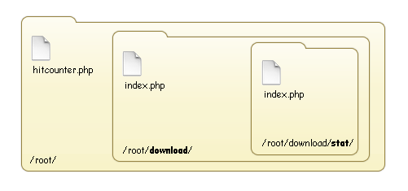

Ce tutoriel a pour but de vous apprendre l’une des nombreuses façons de parvenir à créer un compteur de téléchargements simple, rapide mais surtout léger.
Sur un site qui ne dispose pas d’une grande capacité de stockage et qui propose des téléchargements, il est souvent très utile de savoir quels fichiers sont téléchargés le plus souvent mais surtout lesquels ne le sont pas afin de pouvoir les supprimer et ainsi économiser de l’espace disque.
Il y a plusieurs façons de parvenir au résultat escompté, mais comme je vous l’ai dit dans l’introduction, je me contenterai de vous expliquer la manière qui — à mon sens — est la plus efficace.
Ce à quoi nous voulons arriver est quelque chose dans ce genre :
Après un clic :
À ce propos, il faut que j’introduise la notion de « hit » : un « hit » (en français académique « impact Web ») correspond à un fichier chargé par le navigateur. Ainsi, « 8 hits » pourrait être traduit par « 8 téléchargements ».
Concrètement, que va-t-on faire ?
Pour chaque téléchargement, nous le script va créer un fichier texte contenant le nombre de fois que le fichier a déjà été téléchargé. Lorsque le fichier sera téléchargé à nouveau, ce nombre sera incrémenté (augmenté de 1). Il est inutile dans notre cas de faire appel à une base de données car nous devons simplement enregistrer un nombre, l’accès à un fichier texte est plus rapide et requiert moins de ressources que l’accès à une base de données.
Comment savoir si un fichier a été téléchargé ?
Comme toujours, il va nous falloir ruser ! Le lien que nous allons afficher au visiteur ne mènera pas directement vers le fichier à télécharger mais vers la page des téléchargements, via l’URL nous transmettrons le nom du fichier que le visiteur veut télécharger, cela nous permettra d’une part d’incrémenter le nombre de téléchargements contenu dans le fichier texte se rapportant au nom récupéré via l’URL et d’autre part de rediriger (grâce à la fonction header( ) de PHP) le visiteur vers le fichier souhaité.
Cela peut vous paraître obscur pour le moment mais je vous rassure, vous y verrez beaucoup plus clair lorsque nous commencerons à développer le code. :)
Nous allons tout d’abord commencer par créer les répertoires nécessaires au bon fonctionnement du script (vous pourrez bien entendu les modifier a posteriori mais pour faciliter votre compréhension, je vous demande de suivre mes instructions).
Voici la façon dont nous allons organiser nos répertoires :
À la racine du site (/root/), créez un fichier hitcounter.php ainsi qu’un dossier que vous nommerez download.
Dans le dossier download/, créez un fichier index.php (pour la sécurité, je vous expliquerai plus bas) ainsi qu’un dossier que vous nommerez stat.
Dans le dossier stat/, créez un fichier index.php (pour la sécurité, je vous expliquerai plus bas).
Voici un schéma afin d’illustrer au mieux la situation décrite ci-dessus :

Heu... root, c’est quoi ça ? o_O
root n.m. (mot angl.) racine, origine. En tant que webmaster, c’est la première définition que nous retiendrons : « racine ». Sur un site Web, tous les dossiers et les fichiers sont contenus dans ce répertoire initial. Concrètement, lorsqu’un internaute entre l’URL de votre site dans son navigateur, il est automatiquement redirigé vers ce répertoire (bien que ce dernier n’apparaisse jamais dans la barre de navigation).
Retenez donc que lorsque vous voyez dans un tutoriel root, cela signifie simplement « à la racine ». Vous ne devez donc pas créer de dossier root !
Le Directory Traversal (également appelé Path Traversal) est une technique qu’utilisent les pirates afin de récupérer des informations sur un site cible. Cette technique consiste pour le pirate à se balader dans l’arborescence (d’où le terme « Directory Traversal », que l’on peut traduire par « survol des répertoires ») d’un site Web afin de glaner des informations qu’il pourrait utiliser ultérieurement pour mener une attaque.
Concrètement, le pirate va essayer d’accéder à des répertoires cibles par « tâtonnement », dit-on. Il va essayer, en se basant sur les URL affichées dans la barre de navigation, d’accéder à des fichiers importants.
Une manière simple de se protéger contre ce type d’attaque est de créer dans tous les répertoires un fichier index.php contenant le code suivant :
<?php
header("Location: http://votresite");
?>
Ce code effectue simplement une redirection automatique vers l’URL de votre site et empêche de cette façon le pirate de parcourir l’arborescence de votre site Web.
Maintenant que votre site est protégé contre le Directory Traversal, revenons-en à nos moutons. Je vous informe également que nous travaillerons désormais exclusivement dans le fichier hitcounter.php.
Nous allons commencer par créer deux variables afin de préciser à notre script dans quel répertoire sont stockés les téléchargements et les statistiques.
<?php
$folder_stat = ’download/stat/’ ; // répertoire dans lequel seront stockées les statistiques
$folder_archive = ’download/’ ; // répertoire des téléchargements
?>
Comme je vous l’ai dit plus haut, nous allons transmettre le nom du fichier à télécharger grâce à l’URL, je vous renvoie au cours de M@teo21 pour plus d’informations sur cette technique.
L’URL affichée se présentera comme suit :
http://votresite/hitcounter.php?file=Nom du fichier
On sait donc désormais que si l’on reçoit la variable $_GET[’file’], cela veut dire qu’un internaute souhaite télécharger un fichier.
<?php
if ( isset( $_GET[’file’] ) ) // Si le visiteur veut télécharger un fichier
{
$name = htmlentities($_GET[’file’], ENT_QUOTES); // sécurisation de la variable
if ( file_exists( $folder_stat . $name . ’.txt’ ) ) // si le fichier existe
{
$FileContent = fopen( $folder_stat . $name . ’.txt’, ’r+’ ); // ouverture du fichier statistique contenant le nombre de hits
$hit = fgets( $FileContent ); // récupération de la valeur
$hit = intval( $hit ); // on vérifie qu’il s’agit bien d’un nombre
$hit++; // ajout de 1 au nombre de hits
fseek( $FileContent, 0 ); // réinitialisation du curseur
fputs( $FileContent, $hit ); // écriture dans le fichier
fclose( $FileContent ); // fermeture du fichier
header( "Location: $folder_archive$name.rar" ); // redirection vers le téléchargement
}
}
?>
On commence par sécuriser la variable que l’on reçoit. On vérifie ensuite l’existence du fichier de statistiques et on ouvre ce dernier en mode r+, c’est-à-dire lecture/écriture et place le curseur au début du fichier. On récupère la valeur contenue dans le fichier de statistiques (on prend soin de vérifier si la valeur est bien un entier, afin de ne pas faire exécuter à notre script des codes malicieux), on ajoute 1 au nombre de hits et on enregistre la valeur dans le fichier ad hoc. Pour terminer, on redirige le visiteur vers le fichier qu’il souhaite télécharger.
Mine de rien, on vient de terminer le script du compteur en lui-même. Il ne nous reste plus qu’à écrire le script d’affichage.
Mise en place du code « affichage »
Récupération du nombre de hits
Afin de simplifier l’opération de récupération du nombre de hits, nous allons créer une fonction qui va nous permettre non seulement de récupérer le nombre de hits inhérents au fichier que l’on propose en téléchargement mais aussi qui va se charger de créer le fichier de statistiques s’il n’existe pas.
<?php
function NumberOfHit( $name ) // création de la fonction NumberOfHit
{
$folder_stat = ’download/stat/’ ; // répertoire dans lequel seront stockées les statistiques
$file = $folder_stat . $name . ’.txt’ ; // nom du fichier de statistiques contenant le nombre de hits
if ( file_exists( $file ) ) // si le fichier existe
{
$FileContent = fopen( $file , ’r’ ); // ouverture du fichier
$hit = fgets( $FileContent ); // récupération de la valeur
fclose( $FileContent ); // fermeture du fichier
return $hit; // retour de la valeur de $hit
}
else // si le fichier n’existe pas
{
touch( $file ); // création du fichier
$FileContent = fopen( $file , ’r+’ ); // ouverture du fichier
fseek( $FileContent, 0 ); // réinitialisation du curseur
fputs( $FileContent, 0 ); // écriture dans le fichier
fclose( $FileContent ); // fermeture du fichier
}
}
?>
On commence par vérifier l’existence du fichier de statistiques. S’il existe, on l’ouvre en mode r, c’est-à-dire lecture seule et place le curseur au début du fichier, on récupère la valeur (et on l’attribue à la variable $hit). Si le fichier de statistiques n’existe pas, on le crée, on l’ouvre en mode r+, c’est-à-dire lecture/écriture et place le curseur au début du fichier, on enregistre la valeur « 0 » dans ce dernier et on le ferme.
Affichage des téléchargements
Il ne nous reste plus qu’à afficher les liens vers les téléchargements mais surtout le nombre de hits (cela fait quand même 15 min que l’on bosse dessus :) ). Pour chaque téléchargement, il vous faudra insérer le code suivant :
<?php
$name = ’Fruity Loop 6.2’ ; // nom du fichier (et de l’archive)
$result = NumberOfHit( $name ) ; // récupération du nombre de hits pour le nom concerné
echo ’
<h3>’ . $name . ’</h3>
<p>
Télécharger le fichier : <a href="?file=’ . $name . ’">Direct download</a><br/>
Nombre de hits : ’ . $result . ’
</p>
’;
?>
On commence par déclarer la variable $name correspondant au titre du fichier. Dans notre cas, le fichier à télécharger s’appelle Fruity Loop 6.2.
On récupère le nombre de hits grâce à la fonction créée précédemment et on attribue la valeur à la variable $result. Pour finir, on affiche le tout.
Voilà notre script entièrement terminé. Les ultimes précisions sont dans la partie suivante. ;)
<?php
$folder_stat = 'download/stat/' ; // répertoire dans lequel seront stockées les statistiques
$folder_archive = 'download/' ; // répertoire des téléchargements
if ( isset( $_GET['file'] ) ) // si le visiteur veut télécharger un fichier
{
$name = htmlentities($_GET['file'], ENT_QUOTES); // sécurisation de la variable
if ( file_exists( $folder_stat . $name . '.txt' ) ) // si le fichier existe
{
$FileContent = fopen( $folder_stat . $name . '.txt', 'r+' ); // ouverture du fichier statistique contenant le nombre de hits
$hit = fgets( $FileContent ); // récupération de la valeur
$hit = intval( $hit ); // on vérifie qu’il s’agisse bien d’un nombre
$hit++; // ajout de 1 au nombre de hits
fseek( $FileContent, 0 ); // réinitialisation du curseur
fputs( $FileContent, $hit ); // écriture dans le fichier
fclose( $FileContent ); // fermeture du fichier
header( "Location: $folder_archive$name.rar" ); // redirection vers le téléchargement
}
}
function NumberOfHit( $name ) // création de la fonction NumberOfHit
{
$folder_stat = 'download/stat/' ; // répertoire dans lequel seront stockées les statistiques
$file = $folder_stat . $name . '.txt' ; // nom du fichier de statistiques contenant le nombre de hits
if ( file_exists( $file ) ) // si le fichier existe
{
$FileContent = fopen( $file , 'r' ); // ouverture du fichier
$hit = fgets( $FileContent ); // récupération de la valeur
fclose( $FileContent ); // fermeture du fichier
return $hit; // retour de la valeur de $hit
}
else // si le fichier n’existe pas
{
touch( $file ); // création du fichier
$FileContent = fopen( $file , 'r+' ); // ouverture du fichier
fseek( $FileContent, 0 ); // réinitialisation du curseur
fputs( $FileContent, 0 ); // écriture dans le fichier
fclose( $FileContent ); // fermeture du fichier
}
}
?>
<html>
<head>
<title>HitCounter</title>
<style type="text/css">
* {
font-family: Verdana, Arial, serif;
font-size: 11px;
}
</style>
</head>
<body>
<?php
$name = 'Fruity Loop 6.2' ; // nom du fichier (et de l’archive)
$result = NumberOfHit( $name ) ; // récupération du nombre de hits pour le nom concerné
echo '
<h3>' . $name . '</h3>
<p>
Télécharger le fichier : <a href="?file=' . $name . '">Direct download</a><br/>
Nombre de hits : ' . $result . '
</p>
';
?>
</body>
</html>
Compatibilité entre le script et le xHTML
Comme vous le constatez, dans le code ci-dessus, le code xHTML est entre le code PHP contenant la condition plus la fonction et le code PHP d’affichage des liens de téléchargements. Ce n’est pas un hasard ! J’utilise à de nombreuses reprises la fonction PHP header( ) qui n’admet pas de code xHTML avant elle.
Infrastructures
Bien entendu vous pouvez modifier le répertoire dans lequel sont stockés les fichiers de statistiques et le répertoire dans lequel sont stockés les téléchargements, attention cependant à bien modifier la valeur des variables $folder_stat (cette variable apparaît à deux reprises, l’une au début du code PHP, l’autre au début de la fonction NumberOfHit) et $folder_archive.
Format des fichiers en téléchargement
<?php
header( "Location: $folder_archive$name.rar" ); // redirection vers le téléchargement
?>
Pour des raisons de simplicité et de sécurité du script, toutes les archives doivent être au format RAR. Comme vous pouvez le constater, j’utilise le chemin vers le fichier ( $folder_archive ) directement suivi par le nom du fichier sans son extension ( $name ) et j’ajoute automatiquement l’extension .rar, cela permet d’éviter que n’importe quel type de fichier soit téléchargé.
Affichage des liens
La façon dont j’affiche les liens est la plus basique qu’il soit, et c’est volontaire ! Je ne souhaitais pas m’embarquer dans des scripts faisant appel à SQL. Mon but dans ce tutoriel n’est pas de vous apprendre à faire des boucles pour afficher des résultats provenant d’une base de données mais bien de vous expliquer le principe de fonctionnement d’un compteur de hits.
Premier affichage des liens
Après avoir ajouté un téléchargement, actualisez au moins une fois la page sur laquelle sont affichés vos liens afin de permettre au script de générer le fichier de statistiques (avec la valeur 0) pour chaque nouveau lien.
Libre à vous d’améliorer ce script, vous pourriez par exemple récupérer la liste des téléchargements hors d’une BDD puis faire une boucle pour automatiser l’affichage des liens. Rien de bien compliqué. Je n’ai volontairement pas abordé ce sujet afin de ne pas dévier du thème principal.
Comme toujours les possibilités ne se limitent qu’à votre imagination.
Ce tutoriel touche à sa fin. J’espère avoir été le plus clair possible, si ce n’est pas le cas, notifiez-le via le système de commentaires, je me ferai une obligation de corriger les points ambigus.
Citation : Duc de La Rochefoucauld
L’esprit s’attache par paresse et par constance à ce qui lui est facile ou agréable ; cette habitude met toujours des bornes à nos connaissances, et jamais personne ne s’est donné la peine d’étendre et de conduire son esprit aussi loin qu’il pourrait aller.